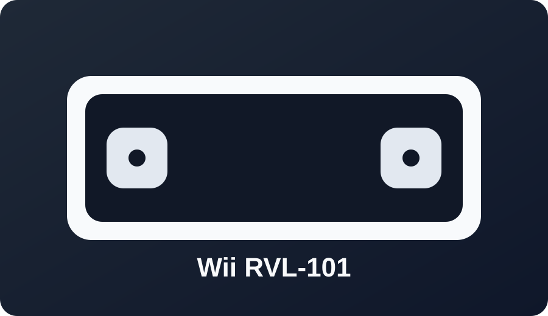

Wii Family Edition (RVL-101)

Best exploit: LetterBomb on 4.3, with str2hax as a fallback where needed.
This revision removes GameCube ports.

Best exploit: LetterBomb on 4.3, with str2hax as a fallback where needed.
This revision removes GameCube ports.